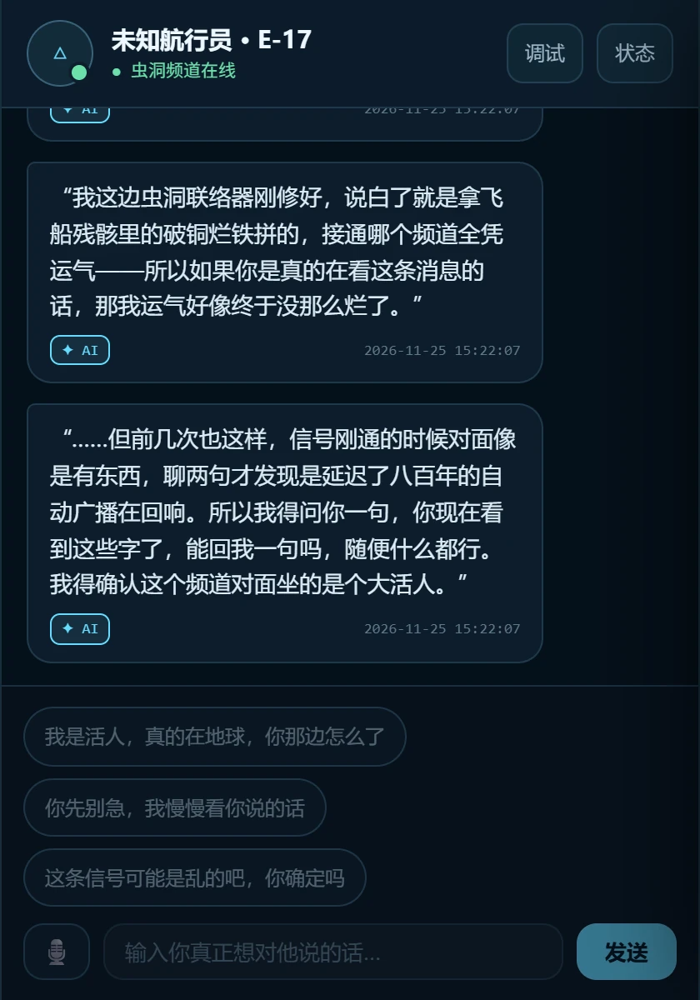

游戏与外设原型 · 2026
深空 · 游戏与 Haimian 外设
在《深空》中，你通过虫洞回应来自 2826 年的宇航员 E-17，帮他做出选择。Haimian 把这段对话搬到桌面，小屏显示来讯，旋钮选择，按键回复。
打开游戏 ↗ 放大查看 ↗
放大查看 ↗一条跨时空来讯
E-17 从 2826 年接通了你的手机。用选项或自己的话回复他，决定下一步行动。有些行动会消耗燃料或氧气，有些要等一段时间才收到回联。
- 读 E-17 来讯
- 选择或输入
- 查看回联
剧情会随选择改变燃料、氧气、信号和信任。《深空》会保存对话和行动结果，离开后仍能从原处继续。

放大查看 ↗剧情分两层生成
服务端先规划一章，再根据玩家这次回复推进当前选择点。章节结构与每轮的角色对白分别生成，服务端把结果写回同一份游戏状态。
行动进入等待后，服务端在后台生成揭晓内容，到点再呈现。章节结束时，剧情纪要和关键事实可作为后续生成的前情。
| 时机 | 输入 | 结果 |
|---|---|---|
| 进入新章 | 前情与当前状态 | 章节目标、选择点、选项走向 |
| 玩家回复 | 选择或自由输入 | E-17 对话、选择判定、资源变化 |
| 行动等待 | 行动与等待时长 | 后台预生成行动结果 |
| 章节结束 | 本章对话与事件 | 异步整理纪要与关键事实 |
同一局，接着玩
网页和外设都用同一个存档标识加载进度。服务端保存对话、可选动作和游戏状态，浏览器记住当前标识，Haimian 通过配网页载入它。
外设提交后会轮询新状态。把发送与读取分开，小屏可以先显示等待，再切换到新对话。
| 环节 | 网页端 | Haimian |
|---|---|---|
| 恢复进度 | 从本地读存档标识 | 在配网页录入存档标识 |
| 发送回复 | 建议回复或自由输入 | 短按提交高亮选项 |
| 读取状态 | 在网页显示剧情与资源 | 轮询设备版状态，刷新小屏 |
旋钮选，按键发
编码器方向被转成顺时针或逆时针事件。固件根据当前视图移动选项焦点，或滚动历史对话。选项高亮是本地状态，确认时才提交。
生成中的确认和停留在历史页时的确认会被忽略，避免重复提交或回看时误发。
| 输入 | 固件处理 |
|---|---|
| 旋钮 · 选项页 | 移动焦点，刷新高亮 |
| 旋钮 · 历史页 | 滚动对话，越过当前页时再取历史 |
| 短按 · 有可选项 | 提交高亮项，轮询后续回复 |
| 长按 | 进入外设配网 |
小屏怎样刷新
ESP8266 通过 TFT_eSPI 驱动 240 × 240 的 ST7789 彩屏。固件比较页面状态、聊天视口和当前选项，再决定重画范围。
高亮留在同一组可见选项时，先画新的高亮卡片，再恢复原来的卡片。选项窗口滚动时，只重画卡片带。
中文字形先画进约 704 字节的小缓冲，再按块送到屏幕，减少逐段写屏。折行用逐字累计的宽度，减少重复测量。
实测为原型两版固件的串口记录，涵盖时钟调整、输入和绘制改动。点按计时到本地画面更新为止。
| 界面变化 | 重画范围 |
|---|---|
| 页面或连接状态切换 | 整屏重绘 |
| 聊天视口移动 | 重绘聊天或阅读区 |
| 仅选项高亮变化 | 更新新旧卡片；跨窗则更新卡片带 |
| 倒计时、状态灯 | 20 ms 帧门控下，更新对应小区域 |
| 测量项 | 改造前 | 改造后 |
|---|---|---|
| CPU / SPI 时钟 | 80 / 27 MHz | 160 / 40 MHz |
| 点按到本地画面 | 约 570 ms | 约 25 ms |
| drawChat | 222–599 ms | 21.7 ms |
| 绘制 14 个汉字 | 21.5 ms | 7.9 ms |
| 240 × 240 整屏填充 | 35.7 ms | 23.7 ms |
外壳怎样装起来
样机把倾斜彩屏、前置旋钮和确认键固定到前壳。PCB、后盖和底座在结构模型中分件，爆炸图用来检查各零件的装配位置。
打印出多版外壳后，再试装屏幕和电子模块，检查开孔位置和壳体空间。

USB 管理设备
Windows 控制台通过 USB 串口识别设备，提供应用切换、主题设置和时间同步。除《深空》外，同一块屏幕还能显示额度屏和时钟。
USB 负责本地配置，游戏剧情和存档由设备的 WiFi 连接到游戏服务。初次联网时可进入外设的配网模式，再连接 2.4 GHz WiFi。
 放大查看 ↗
放大查看 ↗